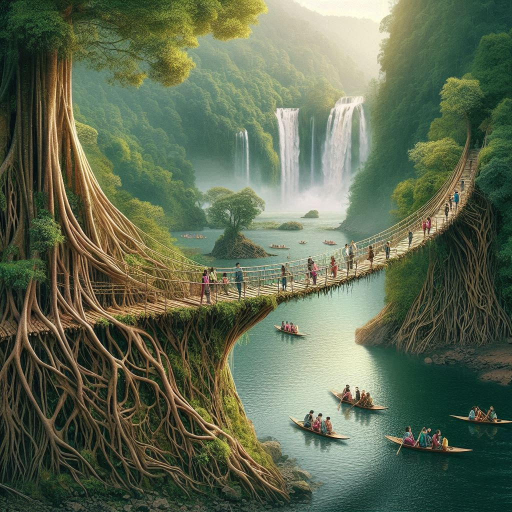
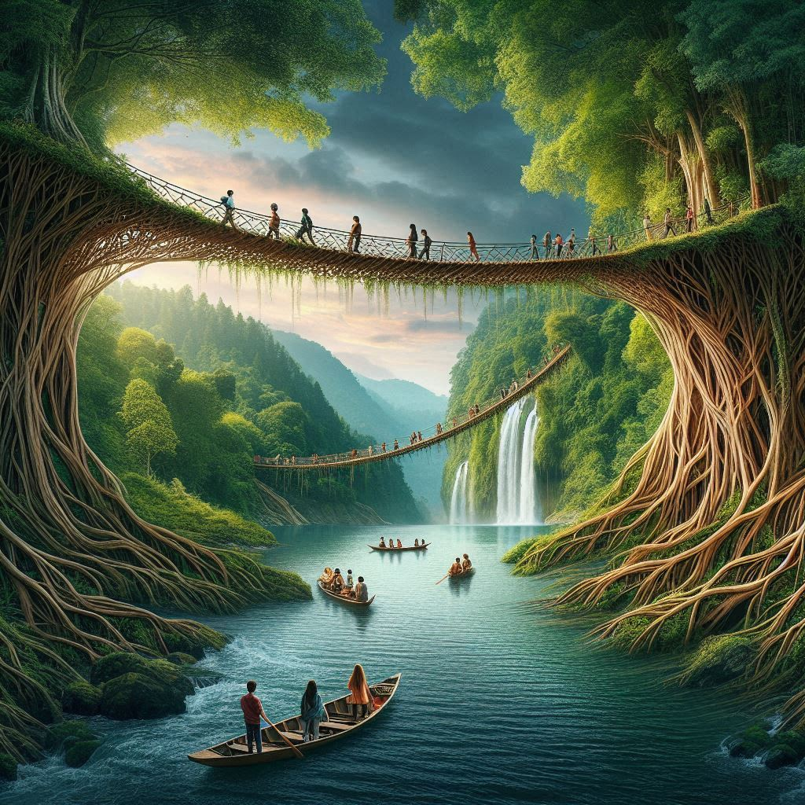

Tourism in Meghalaya
Meghalaya, known as the "Abode of Clouds," is one of India's most scenic states, attracting tourists with its breathtaking landscapes, vibrant culture, and unique experiences. Nestled in the northeastern part of India, Meghalaya offers a variety of natural wonders, historical sites, and cultural experiences. Below are some key aspects of tourism in the state:
1. Natural Beauty
- Living Root Bridges: The living root bridges of Meghalaya, especially in Cherrapunji and Mawlynnong, are one of the state's most unique tourist attractions. These bridges are made by the Khasi people by training the roots of rubber trees to grow across streams and rivers. They are functional and serve as a testament to the symbiotic relationship between nature and human ingenuity.
- Waterfalls: Meghalaya is home to numerous stunning waterfalls, including:
- Nohkalikai Falls: Located near Cherrapunji, it is the tallest waterfall in India, cascading from a height of 340 meters.
- Elephant Falls: Located in Shillong, this waterfall is popular for its picturesque surroundings.
- Shilling Falls: A beautiful waterfall situated close to the city of Shillong.
- Caves: The state has many limestone caves, like the Sohra Caves, Mawsmai Caves, and Siju Caves, which attract spelunking enthusiasts and nature lovers.
- Umiam Lake: Located just outside Shillong, this large reservoir surrounded by hills is perfect for boating, picnics, and enjoying panoramic views.
2. Hill Stations
- Shillong: The capital city of Meghalaya, often referred to as the "Scotland of the East," is known for its pleasant climate, beautiful landscapes, and colonial-era charm. Tourist attractions in Shillong include Ward's Lake, Don Bosco Museum, and the Shillong Peak.
- Mawphlang: A small town known for its sacred groves and scenic beauty, it offers a peaceful retreat with hiking trails and views of the Khasi Hills.
- Tura: Located in the Garo Hills, Tura is famous for its serene landscape, wildlife, and cultural heritage. It is a great base for exploring the hills and nearby attractions.
3. Tribal Culture and Heritage
Meghalaya is home to diverse indigenous communities, including the
Khasi,
Garo, and
Jaintia tribes. Tourists visiting Meghalaya can experience:
- Traditional Tribal Markets: Local markets, such as the one in Shillong, offer traditional crafts, handlooms, and organic produce.
- Cultural Festivals: Festivals such as Behdienkhlam, Wangala, and Nongkrem are celebrated with music, dances, and traditional rituals, giving tourists a chance to immerse themselves in the vibrant local culture.
- Living Root Bridges Tour: Visiting the Living Root Bridges offers a fascinating glimpse into the traditional engineering of the local tribes and their sustainable ways of living.
4. Wildlife and Eco-Tourism
- Kaziranga National Park (near Meghalaya’s border with Assam) is home to the one-horned rhinoceros and offers an exciting safari experience.
- Balpakram National Park: Known for its rich biodiversity and scenic beauty, this park is an important attraction in the Garo Hills region.
- Sohra and Mawphlang Sacred Forests: These forests are protected for centuries by the Khasi tribes, offering tourists a chance to explore diverse flora and fauna.


5. Adventure Tourism
Meghalaya is increasingly becoming a popular destination for adventure lovers. Activities include:
- Trekking: Meghalaya offers excellent trekking routes such as the trek to David Scott Trail or Nongriat for the Living Root Bridges.
- Caving: Meghalaya has numerous caves such as Sohra, Mawsmai, and Siju Caves, which are popular for adventure caving.
- Rock Climbing and Rappelling: Popular in places like Shillong and Mawphlang, this is ideal for adventure enthusiasts.
6. Best Time to Visit
- Autumn and Winter (October to March): The best time to visit Meghalaya is during these months, as the weather is pleasant and ideal for sightseeing.
- Monsoon (June to September): While Meghalaya is known for its heavy rainfall, this is also the time when the state's waterfalls and landscapes are at their most spectacular. However, travel during the monsoon can be tricky due to landslides and road blockages.
Key Tourist Spots
- Cherrapunji (Sohra): Known for its rain, natural beauty, and caves, this town is a must-visit for nature lovers.
- Mawlynnong: Often called Asia’s cleanest village, it is a model for sustainable living and offers beautiful scenic views.
- Nongriat: Famous for the Double-Decker Living Root Bridge, a popular destination for trekkers.
- Elephant Falls and Sohpetbneng Peak: For breathtaking views and nature walks.
Conclusion
Meghalaya is a state where natural beauty, culture, and adventure come together to create a unique tourist experience. Whether you are an adventure enthusiast, a nature lover, or someone interested in exploring the rich tribal heritage, Meghalaya offers something for everyone.